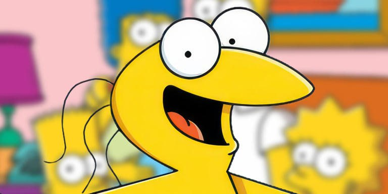

From Japanese meme legend to crypto sensation! ✨

Yakiu no Oniichan was originally created on Japan's NanJ board as a goofy, wide-eyed mascot. He later gained viral attention in the West through the "Graggle Simpson" meme.
Today, Yakiu continues to be used by Japanese netizens to express a wide range of emotions, much like Pepe the Frog in Western meme culture. 🐸
Transcending cultural boundaries between East and West
From Japanese imageboards to worldwide recognition!
Join thousands of Yakiu enthusiasts worldwide 🌎